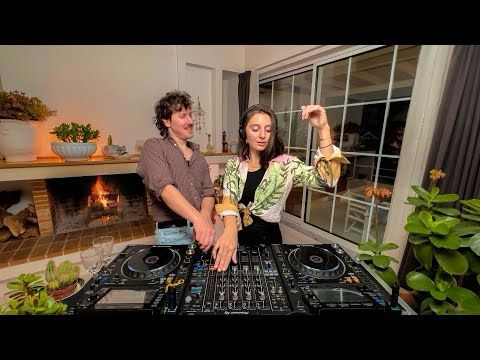

פלייליסט לסופ”ש: מוזיקה, אוכל, ואלגוריתם מנצח
פורסם במקור ב LinkedIn
פלייליסט לסופ”ש: מוזיקה, אוכל, ואלגוריתם מנצח
איך משלבים מוזיקת האוס, נוף עוצר נשימה וסטייק על האש – ליצירת סרטון שמרוויח עד 50,000 דולר?
הכירו את Flavour Trip – הצמד Amii Watson ו-Jimmi Harvey שמתעדים את האהבה שלהם למוזיקה ולאוכל בצורה שסחפה את העולם
הזוג Amii Watson ו-Jimmi Harvey הם צמד די.ג’יים מלוקסמבורג, שהקימו את ערוץ היוטיוב Flavour Trip. הם מטיילים ברחבי אירופה בוואן, משלבים מוזיקת האוס עם בישול של מנות מקומיות, ומפיקים סרטונים בלוקיישנים ייחודיים בטבע.
הם התחילו את Flavour Trip ב-2022, ומאז בנו קהילה של מאות אלפי עוקבים ביוטיוב, עם מיליוני צפיות. הייחוד שלהם הוא בשילוב בין מוזיקה, אוכל ונופים, שמייצר חוויה אותנטית ומרגשת לצופים
כל סרטון שלהם משלב סט האוס מרגיע, בישול של מתכון מקומי, וצילום באחד הלוקיישנים הכי יפים ביבשת.
בלי מילים. בלי הפקה מנופחת. רק נוף, סאונד טוב - וצלחת מושלמת.
התוצאה? מאות אלפי עוקבים, מיליוני צפיות, והכנסות שמגיעות עד 50,000 דולר לסרטון אחד.
כן, חמישים אלף. על סרטון של מוזיקה ואוכל.
במקום להילחם על תשומת לב, הם בנו חוויה שמושכת אותה בלי מאמץ.
וזה בדיוק מה שהאלגוריתם אוהב.
כנסו לסרטון הזה ותבינו למה.
שימו אוזניות. תתרווחו. ותתכוננו לרצות לעזוב הכל ולצלם אוכל ברומניה:
